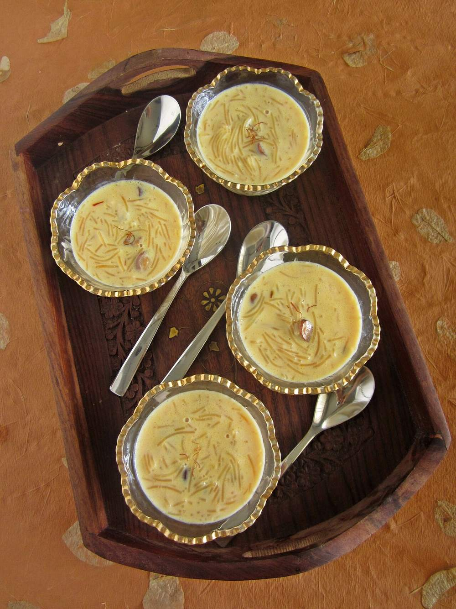

Contains: milk, gluten, tree nuts
Checked against the ingredient list for ten allergens: milk, egg, fish, crustaceans, tree nuts, peanuts, sesame, mustard, soy and gluten. Brands vary, so read the label on anything new to you.
Ingredients
Quantities for 6.
- 100g, roasted semiya Vermicelliwheat vermicelli. This dish is not gluten-free
- 1.2 litres full-fat Milk
- 120g, or to taste Sugar
- 3 tbsp Condensed Milkfor body without a long reductionoptional
- 3 tbsp Ghee
- 20, halved Cashew
- 2 tbsp Raisins
- 5 pods, seeds crushed to a powder Cardamom
- 2 tbsp, cut into small slivers Coconutfried in ghee, a Kerala touchoptional
Cookware
stovetop
Before you start
- Crush the cardamom seeds fresh rather than using pre-ground powder; the difference in a milk sweet is obvious.
- Have the milk in a heavy-bottomed pan and warm it while you fry the nuts. Cold milk on a hot base scorches.
- If your vermicelli is not pre-roasted, dry-roast it in a pan for 4 minutes until it smells biscuity.
Method
- Heat the ghee in a heavy pan and fry the cashews over medium heat for 2 minutes until pale gold, then lift them out with a slotted spoon.Take the cashews out while they are still blond. They keep colouring in the hot ghee off the heat.
- Fry the raisins in the same ghee for 20 seconds until they swell and puff, then lift them out.
- Fry the coconut slivers, if using, for 2 minutes until golden and set aside with the nuts.
- Break the vermicelli into 3cm lengths, add to the remaining ghee and roast over medium-low heat for 4-5 minutes until evenly light brown.Even browning here is what stops the payasam turning to paste later. Keep it moving.
- Pour in the milk, raise the heat and bring to a gentle boil, stirring so nothing sticks to the base.
- Lower the heat and simmer 12-15 minutes, stirring every couple of minutes, until the vermicelli is soft and the milk has thickened and turned faintly cream-coloured.Scrape the base of the pan with a flat spoon each time you stir. Milk catches there before you can smell it.
- Stir in the sugar and the condensed milk and cook a further 5 minutes until fully dissolved.
- Add the crushed cardamom, stir once and take the pan off the heat.
- Fold through most of the fried cashews, raisins and coconut, keeping some back for the top.
- Rest 10 minutes (it thickens considerably as it stands) then scatter over the reserved nuts and serve warm or chilled.It thickens a lot on cooling. Pull it off the heat looser than you want the final texture to be.
Storage
Keeps 3 days refrigerated. It sets solid when cold; loosen with 3-4 tbsp warm milk and reheat gently on the stovetop, stirring.
Nutrition Medium estimate
Low protein: 10 g a serving, 10% of the calories
| Per serving267 g | Per 100 g | |
|---|---|---|
| Calories | 378 kcal | 142 kcal |
| Protein | 9.6 g | 4 g |
| Carbohydrate | 51.1 g | 19 g |
| of which sugars | 38.5 g | 14 g |
| Fibre | 1.1 g | 0 g |
| Fat | 15.7 g | 6 g |
| of which saturated | 9.7 g | 4 g |
| of which unsaturated | 4.6 g | 2 g |
Ingredients given to taste count as zero, so the real figures run a little higher. Nearest database match used for vermicelli. Estimated from raw ingredients using USDA FoodData Central.
Written and checked against sources, not cooked in a test kitchen. Times, yields, allergens and nutrition are worked out rather than measured, so use your own judgement on doneness and on storing. More in About.